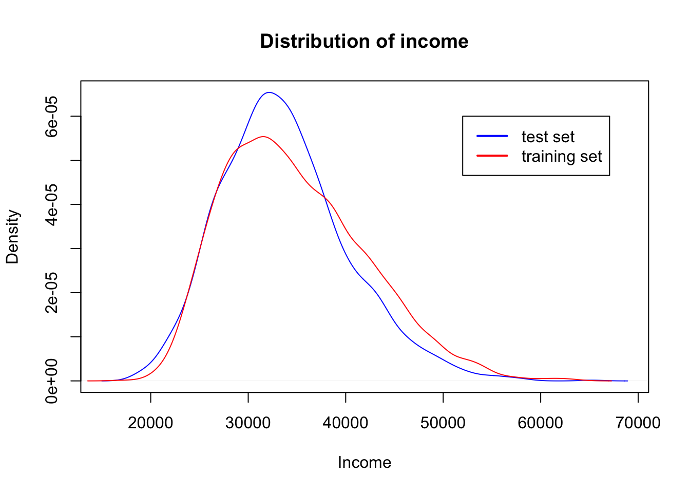
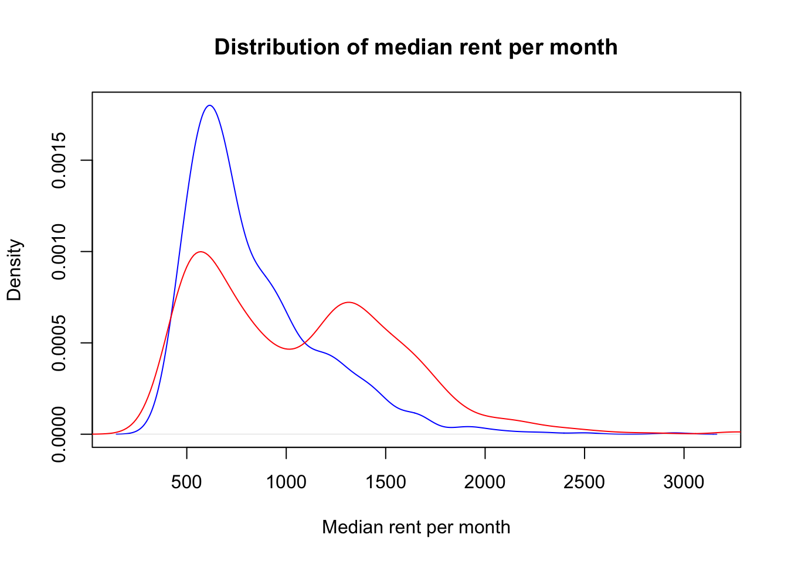
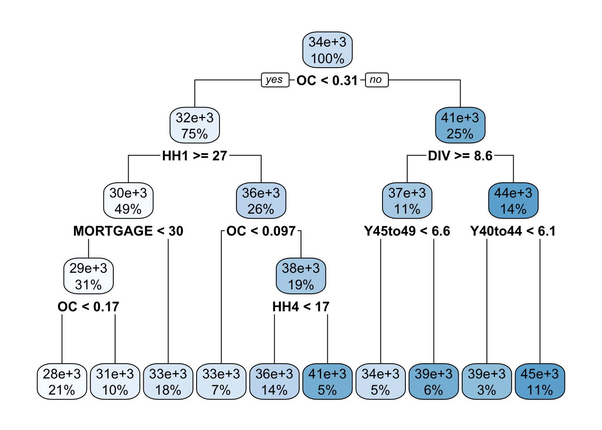
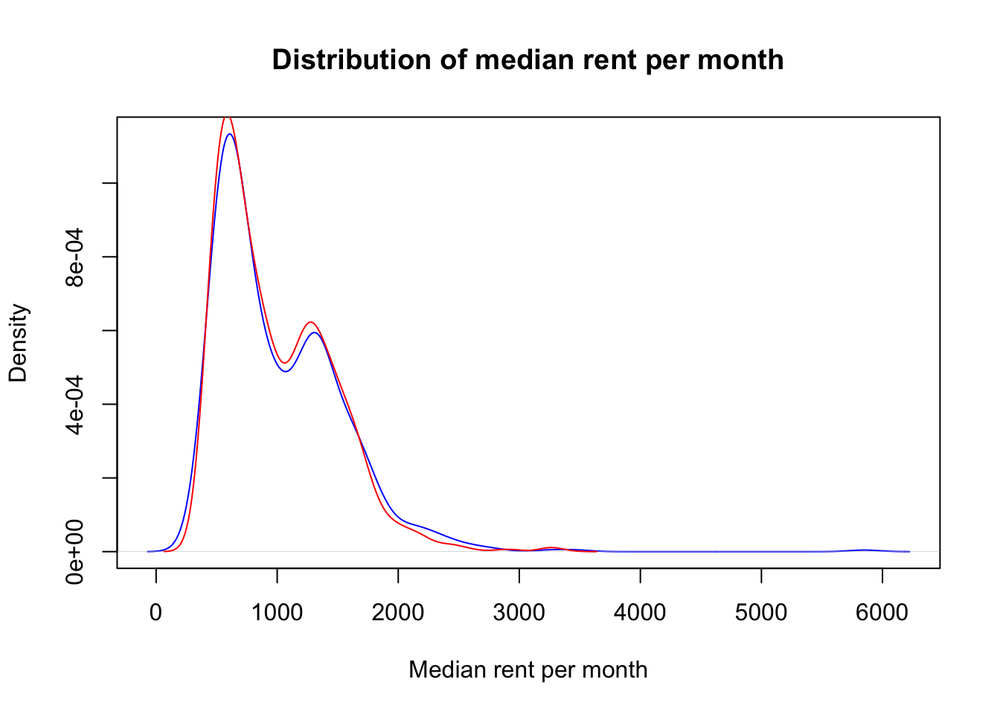
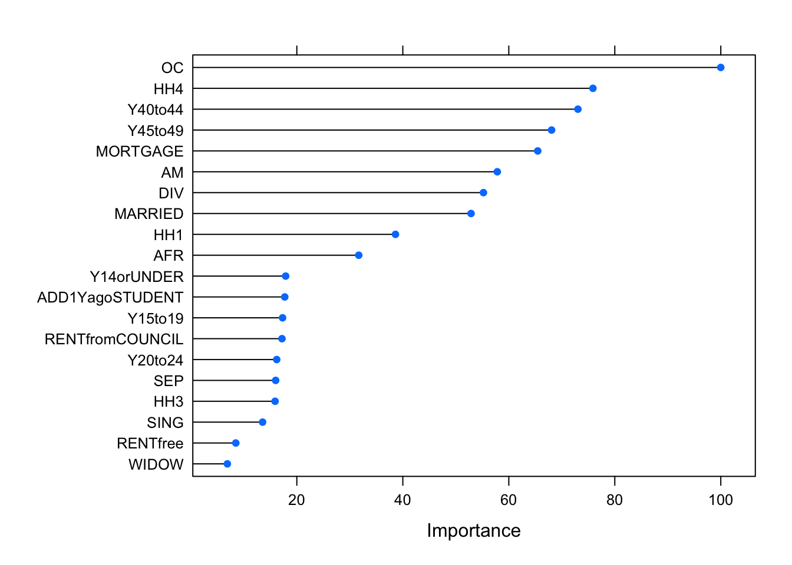
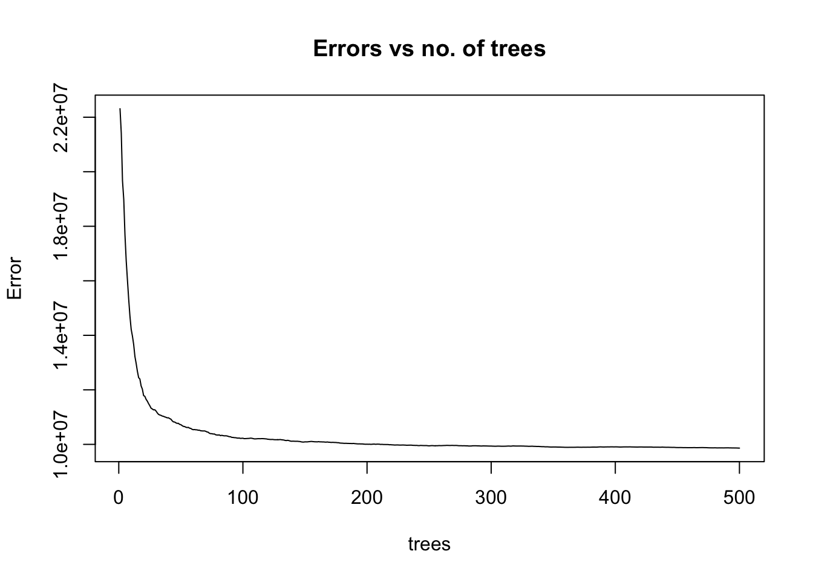

# Import the dplyr package for data manipulation
suppressMessages(library(dplyr))
# Import the rpart package for decision tree modeling
suppressMessages(library(rpart))
# Import the rpart.plot package for visualization of decision trees
suppressMessages(library(rpart.plot))
# Import ggplot 2 to make plots
suppressMessages(library(ggplot2))
# Import Metrics for performance metrics calculation
suppressMessages(library(Metrics))
# Import caret for machine learning modeling and evaluation
suppressMessages(library(caret))
# Import randomForest for the random forest algorithm
suppressMessages(library(randomForest))
# Import ranger for the ranger implementation of random forest, which is optimised for performance
suppressMessages(library(ranger))10 Machine Learning
Machine learning (ML) is one of the most wanted skills in today’s job market. It has very wide applications in many areas, from developing software for self-driving cars to early detection of deadly diseases such as cancer, but also in the studies of populations and human geography. Although the term machine learning has become a lot more popular in the last few years thanks to the increased capabilities to analyse larger amounts of data, many ML techniques have existed for decades in other fields such as statistics and computer science.
Just like in regression problems, ML algorithms build models based on sample data in order to make predictions or decisions about other unseen data. In fact, linear regression can be regarded as a very simple case of a neural network. There are different approaches to ML according to the type of feedback available to the ML algorithms:
Supervised learning: we give the algorithm data where the inputs and outputs are already mapped, then the algorithm learns patterns of this mapping to be applied on new unseen data sets. Linear regression is an example of supervised learning.
Unsupervised learning: we give the algorithm data where the inputs have no matched outputs. The task of the algorithm is to learn patterns in the data or processes to achieve a certain goal. An example of this is the k-means clustering algorithm that you explored in previous chapters.
Reinforcement learning: the algorithm must achieve a goal while interacting with a dynamic environment. While navigating the environment, the algorithm is provided with feedback in the form of rewards which it tries to maximise (Bishop 2006). An example of this would be some of the software involved in self-driving cars.
In this chapter we will focus only on two ML techniques which are, however, very versatile since they can be used for classification, regression and other tasks. The first and most basic of the techniques that we will explore is decision trees. Building on these, we will then explore random forests. Both methods belong to the supervised learning approach. To illustrate the usage of these techniques within the context of population science, we will look at predicting the annual household income across the UK geography based on demographic data obtained from the census.
This chapter is based, among others, on the following references:
Hands-on Machine Learning with R. Chapter 9: Decision trees (Boehmke 2019).
UC Business Analytics R Programming Guide, developed by Brad Boehmke. Specifically, the chapters on Regression Trees & Bagging and Random Forests, which can be found here.
10.1 Dependencies
10.2 Data
As mentioned above, we will learn about decision trees and random forests through a practical example where the goal is to predict the net annual household income across different regions of the UK. Given that UK censuses take place separately in Northern Ireland, Scotland and England & Wales, we will focus only on England & Wales for simplicity.
In the code chunk below, we load a data set that has already been prepared for this notebook. It includes a variety of variables related to demographic characteristics of the population, aggregated at the Middle-Layer Super Output Area (MSOA) level. All the variables, except for the average annual household income, are derived from the 2021 census and the raw data can be downloaded from here. The annual household income data is from the Annual Survey of Hours and Earnings and can be downloaded from this link.
# Load the data
df_MSOA <- read.csv("./data/machine-learning/census2021-msoa-income.csv")
# Data cleaning, remove the X field
df_MSOA$X <- NULL
# Data cleaning, the fields "date", "geography" and "geography.code" are not needed
df_MSOA <- subset(df_MSOA, select = -c(date, geography, geography.code))
# More data cleaning, remove comma from income and turn it into a numeric value
df_MSOA$INCOME <- as.numeric(gsub(",", "", df_MSOA$INCOME))For a description of the variables in the columns of df_MSOA, we can load a dictionary for these variables:
# Load variable dictionary
df_dictionary <- read.csv("./data/machine-learning/Dictionary.csv")
head(df_dictionary) Dictionary X
1
2 Name Key
3 Lives in household (% persons) inHH
4 Lives in communal establishment (% persons) inCE
5 Never married or civil partnership (% persons) SING
6 Married or in civil partnership (% persons) MARRIED10.3 Splitting the data
For most supervised learning problems, the goal is to find an algorithm or model that not only fits well known data, but also accurately predicts unknown values of the average annual household income based on a set of inputs. In other words, we want the algorithm to be generalisable. In order to measure the generalisability of the optimal algorithm, we can split the data into a training set containing input and output data and a test set. The training set is used to teach the algorithm how to map inputs to outputs, and the test set is used to estimate the prediction error of the final algorithm, which quantifies the generalisability of the model. The test set should never be used during the training stage.
As a rule of thumb, the data should be split so that 70% of the samples are in the training set and 30% in the test set, although this percentages might vary slightly according to the size of the original data set. Furthermore, to ensure generalisability, the data split should be done so that the distribution of outputs in both the training and test set is approximately the same.
The function create_train_test below (borrowed from here) allows us to select samples from the data to create the training set (when the train parameter is set to TRUE) and the test set (when the train parameter is set to FALSE).
create_train_test <- function(data, size = 0.7, train = TRUE) {
n_row = nrow(data)
total_row = size * n_row
train_sample <- 1: total_row
if (train == TRUE) {
return (data[train_sample, ])
} else {
return (data[-train_sample, ])
}
}df_train <- create_train_test(df_MSOA, 0.7, train = TRUE)
df_test <- create_train_test(df_MSOA, 0.7, train = FALSE)If the data is naively split into training and test sets as we did above, the distribution of outputs in the training and test set will not be the same, as the following plot shows.
d1 <- density(df_test$INCOME)
plot(d1, col='blue', xlab="Income", main="Distribution of income")
d2 <- density(df_train$INCOME)
lines(d2, col='red')
legend(52000, 0.00006, c("test set","training set"), lwd=c(2,2), col=c("blue","red"))
This is due to the fact that the dataset that we loaded at the beginning of this workbook is sorted so that some entries corresponding to MSOAs that are geographically close to each other are in consecutive rows. Therefore, to ensure that the distribution of outputs in training and test sets is the same, the data needs to be randomly shuffled. The code below achieves this goal, as it can be seen in the kernel density plot with the new data split.
# Shuffle the entries of the original dataset
shuffle_index <- sample(1:nrow(df_MSOA))
df_MSOA <- df_MSOA[shuffle_index, ]#Perform the data split with the new shuffled dataset
df_train <- create_train_test(df_MSOA, 0.7, train = TRUE)
df_test <- create_train_test(df_MSOA, 0.7, train = FALSE)#Plot the kernel density for both training and test data sets
d1 <- density(df_test$INCOME)
plot(d1, col='blue', xlab="Income", main="Distribution of income")
d2 <- density(df_train$INCOME)
lines(d2, col='red')
legend(52000, 0.00006, c("test set","training set"), lwd=c(2,2), col=c("blue","red"))
Before proceeding any further we should note here that one of the advantages of decision trees and random forests is that they are not sensitive to the magnitude of the input variables, so standardisation is not needed before fitting these models. However, there are other ML algorithms such as k-means, where standardisation is a crucial step to ensure the success of learning process and it should always take place before training the algorithm. Similarly, random forests are not sensitive to correlations between independent variables, so there is no need to check for correlations before training the models.
10.4 Decision trees
10.4.1 Fitting the training data
Decision trees are an ML algorithm capable of performing both classification and regression tasks, although in this workbook we will focus only on regression. One of their most notable advantages is that they are very interpretable, although their predictions are not always accurate. However, by aggregating decision trees through a method called bagging, the algorithm can become much more powerful.
In essence, a decision tree is like a flowchart that helps us make a decision based on a number of questions or conditions, which are represented by internal nodes. It starts with a root node and branches out into different paths, with each branch representing a decision. The final nodes represent the outcome and are known as leaf nodes. For example, imagine you are trying to decide what to wear to an event. You could create a decision tree with the root node being “Formal event?”, like in the diagram below. If the answer is “yes” you would proceed to the left and if the answer if “no”, you would proceed to the right. On the right, you would have another node for “Black tie?”, and again two “yes” and “no” branches emerging from it. On the left, you would have a node for “Everyday wear?” with its two branches. Each branch would eventually lead to a decision or action represented by the so-called leaf nodes, such as “wear suit”.

The decision tree to predict the annual household income of an MSOA based on its demographic features will be a lot more complex than the one depicted above. The branches will lead to leaf nodes representing the predicted values of annual household income. The internal nodes will represent conditions for the demographic variables (e.g. is the percentage of people aged 65 or over in this MSOA greater than X %?). Not all the demographic variables will be equally relevant to predict the annual household income at the MSOA level. To optimise the prediction process, conditions on the most relevant variables should be near the root of the tree so the most determining questions can be asked at the beginning of the decision-making process. The internal nodes that are further from the tree will help fine-tune the final predictions. But, how can we choose which are the most relevant variables? And, what are the right questions to ask in each internal node (e.g. if we are asking ‘is the percentage of people aged 65 or over in this MSOA greater than X %?’, what should be the value of X ?).
Luckily, nowadays there are many off-the-shelf software packages available that can help us build decision trees with just a line of code. Here, we use the R package rpart, which is based on the Classification And Regression Tree (CART) algorithm proposed by Breiman (Breiman 1984). In particular, we can use the function rpart() to find the decision tree that best fits the training set. This function requires to use the formula method for expressing the model. In this case, the formula is INCOME ~., which means that we regard the variable INCOME as a function of all the other variables in the training data set. For more information on the formula method, you can check the R documentation. The function rpart() also requires to specify the method for fitting. Since we are performing a regression task (as opposed to classification), we need to set method to 'anova'.
fit <- rpart(INCOME ~., data = df_train, method = 'anova')We can visualise the fitted decision tree with the rpart.plot() function from the library with the same name. Interestingly, the condition for the root node is associated with the variable representing the percentage of people born in Antarctica, Oceania and Other, so if an MSOA has less than 0.25% people born in those territories, the model predicts it to have lower annual household income. Can you think of why this might be the case?
rpart.plot(fit)
As we can see, rpart() produces a decision tree with 11 leaf nodes and the conditions to reach each leaf are associated with only 8 demographic variables. However, in the original training set, there were many more demographic variables that have not been included in the model. The reason for this is that, behind the scenes, rpart() is trying to find a balance between the complexity of the tree (i.e. its depth) and the generalisability of the tree to predict new unseen data. If it is too deep, the tree runs the risk of overfitting the training data and failing to predict the annual household income for other MSOAs that are not included in the training set.
To illustrate the point of selecting a tree with 11 leaves, we can manually control the level of complexity allowed when fitting of a decision tree model. The lower we set the value of the parameter cp, the more complex the resulting tree will be, so cp can be regarded as penalty for the level of complexity or a cost complexity parameter. Below, we fit a decision tree with no penalty for generating a complex tree model, i.e. cp=0, and then we use the function plotcp() to plot the prediction error (PRESS statistic) that would be achieved with decision trees of different levels of complexity.
# set seed for reproducibility
set.seed(123)
# train model
fit2 <- rpart(INCOME ~., data = df_train, method = 'anova', control = list(cp = 0))
# plot error vs tree complexity
plotcp(fit2)
# draw vertical line at 11 trees
abline(v=11, lty='dashed')
As we can see from the plot above, with more than 11 leaves, little reduction in the prediction error is achieved as the model becomes more and more complex. In other words, we start seeing diminishing returns in error reduction as the tree grows deeper. Hence rpart() is doing some behind-the-scenes tuning by pruning the tree so it only has 11 leaf nodes.
There are other model parameters that can be tuned in order to improve the model performance via the control argument of the rpart() function, just like we did above for cp. While we do not experiment with these additional parameters in the workbook, we provide brief descriptions below so you can explore them on your own time:
minsplitcontrols the minimum number of data points required in each leaf node. The default is 20. Setting this lower will result in more leaves with very few data points belonging to the corresponding branch.maxdepthcontrols the maximum number of internal nodes between the root node and the terminal nodes. By default, it is set to 30. Setting it higher allows to create deeper trees.
10.4.2 Measuring the performance of regression models
To measure the performance of the regression tree that we fitted above, we can use the test set. We firstly use the predict() function from the rpart library to compute some predictions on the MSOA annual household income for the test set data.
predict_unseen <-predict(fit, df_test)Then, we compare the predictions with the actual values and measure the discrepancy with a regression error metric.
Note that, to measure the performance of classification trees, the procedure would be slightly different and it would involve the computation of a confusion matrix and the accuracy metric.
Different error metrics exist to measure the performance of regression models such as the Mean Squared Error (MSE), the Mean Absolute Error (MAE) or the Root Mean Squared Error (RMSE). The MSE is more sensitive to outliers than the MAE, however, the units of MSE are squared units. The RMSE solves the problem of the squared units associated with MSE by taking its squared root. The library Metrics provides the in-built function rmse() which makes the computation of RMSE straightforward:
rmse(predict_unseen, df_test$INCOME)[1] 4855.626This value does not have much meaning in isolation. A good or bad RMSE is always relative to the specific data set. For this reason, we need to establish a baseline RMSE that we can compare it with. Here we establish this baseline as the RMSE that would be obtained from a naive tree that merely predicts the mean annual household income value across all the data entries in the training set. If the fitted model achieves an RSME lower than the naive model, we say that the fitted model “has skill”. The following line of code confirms that our fitted model is better than the naive model.
rmse(predict_unseen, mean(df_train$INCOME))[1] 5196.25610.4.3 Bagging
Even though single decision trees have many advantages such as being very simple and interpretable, their predictions are not always accurate due to their high variance. This results in unstable predictions that may be dependent on the chosen training data.
A method called bagging can help solve this issue by combining and averaging the predictions of multiple decision tree models. The method can actually be applied to any regression or classification model, however, it is most effective when applied to models that have high variance. Bagging works by following three steps:
Create m bootstrap samples from the training data (i.e. m random samples with replacement).
For each bootstrap sample, train an unpruned single tree (i.e. with
cp=0).To create a prediction for a new data point, input the data in the single trees fitted with each bootstrap sample. The prediction will be the average of all the individual predictions output by each tree.
Each bootstrap sample typically contains about two-thirds of the training data, leaving one-third out. This left-out third is known as the out-of-bag (OOB) sample and it provides a natural opportunity to cross-validate the predictive performance of the model. By cross-validating the model, we can estimate how well our model will perform on new data without necessarily having to use the test set to test it. In other words, we can use the whole of the original data set for training and still quantify the performance of the model. However, for simplicity, we will train the model on the training set only here.
Bagging can be easily done with a library called caret. Here we fit a 10-fold cross-validated model, meaning that the bagging is applied so that there are 10 different OOB samples.
# specify 10-fold cross validation
ctrl <- trainControl(method = "cv", number = 10)
# set seed for reproducibility
set.seed(123)
# train the cross-validated bagged model
bagged <- caret::train(INCOME ~ ., data = df_train, method = "treebag", trControl = ctrl, importance = TRUE)
print(bagged)Bagged CART
4956 samples
48 predictor
No pre-processing
Resampling: Cross-Validated (10 fold)
Summary of sample sizes: 4461, 4461, 4459, 4462, 4460, 4461, ...
Resampling results:
RMSE Rsquared MAE
4094.84 0.6672087 3075.07We see that the cross-validated value of RMSE with bagging is lower than that associated with the single decision tree that we trained with rcart. This indicates that the predictive performance is estimated to be better. We can compare the cross-validated value of the RMSE with the RMSE from the test set. These two quantities should be close:
predict_bagged_unseen <- predict(bagged, df_test)
rmse(predict_bagged_unseen, df_test$INCOME)[1] 4371.322The library caret has an additional function varImp() that helps us understand the variable importance across the bagged trees, i.e. the variables that are most relevant to determine the predictions of MSOA net annual household income. You are welcome to check the caret documentation to learn more about how the variable importance is determined. We can plot a rank of variable importance by running the code below.
plot(varImp(bagged), 20)
As noted before, given the variables included in our original data set, the percentage of people born in Antarctica, Oceania and Other is, almost invariably, the best predictor of annual household income, although due to the randomness introduced in bagging, this could sometimes change.
10.5 Random forests
While bagging considerably improves the performance of decision trees, the resulting models are still subject to some issues. Mainly, the multiple trees that are fitted through the bagging process are not completely independent of each other since all the original variables are considered at every split in every tree. As a consequence, trees in different bootstrap samples have similar structure (with almost always the same variables near the root) and the variance in the predictions cannot be reduced optimally. This issue is known as tree correlation.
Random forests optimally reduce the variance of the predicted values by minimising the tree correlation. This is achieved in two steps:
Like in bagging, different trees are fitted from bootstrap samples.
However, when an internal node is to be created in a given tree, the search for the optimal variable in that node is limited to only a random subset of the explanatory variables. By default, the number of variables in these subsets is one-third of the total number of variables, although this proportion is considered a tuning parameter for the model.
10.5.1 Basic implementation
Several R implementations for random forest fitting exist, however, the most well known is provided by the randomForest library. By default it performs 500 trees (i.e. 500 bootstrap samples) and randomly selects one-third of the explanatory variables for each split, although these parameters can be manually tuned. The random forest model can be trained by executing just a line of code:
# set seed for reproducibility
set.seed(123)
# train model
fit_rf <- randomForest(formula= INCOME ~., data = df_train)
# print summary of fit
fit_rf
Call:
randomForest(formula = INCOME ~ ., data = df_train)
Type of random forest: regression
Number of trees: 500
No. of variables tried at each split: 16
Mean of squared residuals: 9777006
% Var explained: 79.97As we can see from above, the mean of squared residuals, which is the same as the MSE, is 9903736 for 500 trees and therefore, RMSE = 3147. This metric is computed by averaging residuals from the OOB samples. To illustrate how the MSE varies as more bootstrap samples are added to the model, we can plot the fitted model:
plot(fit_rf, main = "Errors vs no. of trees")
We see that the MSE becomes stable with approximately 100 trees, but it continues to decrease slowly. To find the number of trees that lead to the minimum error, we can run the following line:
which.min(fit_rf$mse)[1] 498By computing the RMSE, we can compare the performance of this model with performance of the models in the previous sections:
sqrt(fit_rf$mse[which.min(fit_rf$mse)])[1] 3126.705This is a much lower value than what we obtained with just a single tree and even after applying bagging! Remember, this RMSE is based on the OOB samples, but we could also obtain it from the test set. randomForest() allows us to easily compare the RMSE obtained from OOB data and from the test set.
# format test set for comparison of errors with randomForest
x_test <- df_test[setdiff(names(df_test), "INCOME")]
y_test <- df_test$INCOME
# set seed for reproducibility
set.seed(123)
# include test data in training
rf_oob_compare <- randomForest(formula = INCOME ~ ., data = df_train, xtest = x_test, ytest = y_test)
# extract OOB & test errors
oob_rmse <- sqrt(rf_oob_compare$mse)
test_rmse <- sqrt(rf_oob_compare$test$mse)
# plot error vs no. of trees
x=1:rf_oob_compare$ntree
plot(x, oob_rmse, type="l", col='blue', lwd=2, xlab = "No. of trees", ylab = "RMSE", main = "Comparison of RMSE")
lines(x, test_rmse, type="l", col='red', lwd=2)
legend(350, 4500, c("OOB","test"), lwd=c(2,2), col=c("blue","red"))
10.5.2 Tuning
You may have noticed that the number of trees is not the only parameter we can tune in a random forest model. Below we list the model parameters, a.k.a. hyperparameters that can be tuned to improve the performance of the random tree models:
num.treesis the number of trees. It should be large enough to make sure the MSE (or the RMSE) stabilises, but not too large that it creates unnecessary work.mtryis the number of variables that are randomly sampled at each split. The default is one-third of the number of variables in the original data set. Ifmtrywas equal to the total number of variables, the random forest model would be equivalent to bagging. Similarly, ifmtrywas equal to 1, it would mean that only one variable is chosen, but then the results can become too biased. To find the optimal value ofmtry, it is common to attempt 5 values evenly spread between 2 and the total number of variables in the original data set.sample.fractioncontrols the number of data points in each bootstrap sample, i.e. the number of samples chosen to create each tree. By default, it is 63.25% (about two-thirds) of the training set since on average, this guarantees unique data points in a sample. If the sample size is smaller, it could reduce the training time but it could also introduce some bias in the model. If the sample size is larger, it could lead to overfitting. When tuning the model, this parameter is frequently kept between 60 and 80% of the total size of the training set.min.node.sizeis the minimal node size to split at. Default is 5 for regression.max.depthis the maximum depth of the trees.
In order to find the combination of hyperparameters that leads to the best performing model, we need to try them all and select the one with the lowest MSE or RMSE. This is usually a computationally heavy task, so as the models and the training data become larger, the process of tuning can become very slow. The library ranger provides a C++ implementation of the random forest algorithm and allows to perform hyperparameter search faster than randomForest.
As mentioned, to find the best performing model, we need to find the right combination of hyperparameters. So the first step in the tuning process is to generate a “grid” of possible combinations of hyperparameters. If we only wanted to tune ntree (as we did in the previous subsection when we found that the number of trees leading to the lowest value of MSE is 495), the grid would be simply a list of possible ntree values. To illustrate more complex tuning, here we generate a grid that considers mtry, sample.fraction and min.node.size. The grid is created as follows:
# Considering that there are 48 explanatory variables in the original dataset, we will try values of mtry between 10 and 30. The sample size will go from 60% and 80% of the total size of the training set. We will try minimal node size splits between 5 and 20.
hyper_grid <- expand.grid(mtry = seq(10, 20, by=2),
sample.fraction = c(0.60, 0.65, 0.70, 0.75, 0.80),
min.node.size = seq(3, 9, by=2))
# total number of hyperparameter combinations
nrow(hyper_grid)[1] 120Next, we can loop through the grid and generate, for each hyperparameter combination, random forest models based on 500 trees. For each random forest model, we will add the OOB RMSE error to the grid so we can find what hyperparameter combination minimises this error. Note that we set the value of seed for code reproducibility purposes.
for(i in 1:nrow(hyper_grid)) {
# train model
fit_rf_tuning <- ranger(formula = INCOME ~ .,
data = df_train,
num.trees = 500,
mtry = hyper_grid$mtry[i],
sample.fraction = hyper_grid$sample.fraction[i],
min.node.size = hyper_grid$min.node.size[i],
seed = 123)
# add OOB error to grid
hyper_grid$OOB_RMSE[i] <- sqrt(fit_rf_tuning$prediction.error)
}Growing trees.. Progress: 6%. Estimated remaining time: 9 minutes, 28 seconds.
Growing trees.. Progress: 41%. Estimated remaining time: 43 seconds.
Growing trees.. Progress: 39%. Estimated remaining time: 49 seconds.
Growing trees.. Progress: 53%. Estimated remaining time: 27 seconds.From the fitted models, the one that produces the minimum OOB RMSE and hence, the best-performing one, is given by the combination of parameters printed below:
hyper_grid[which.min(hyper_grid$OOB_RMSE),] mtry sample.fraction min.node.size OOB_RMSE
21 14 0.75 3 3124.939mtry= 14, sample.fraction =0.8 and min.node.size=3. The OOB RMSE is 3141.089, slightly lower than the error we obtained with the default model for random forest with no tuning, yay!
10.6 Questions
For this set of questions, you will use a data set very similar to the one used in the examples above. However, instead of focusing on predicting the net annual household income, you will focus in the median house price paid in each MSOA in 2021. The raw data for median house price can be downloaded here, but we have created a clean dataset for you. You can load the relevant data set by running the code below:
# Load the data
df_housing <- read.csv("./data/machine-learning/census2021-msoa-houseprice.csv")
# Data cleaning, remove the X field
df_housing$X <- NULL
# Data cleaning, the fields "date", "geography" and "geography.code" are not needed
df_housing <- subset(df_housing, select = -c(date, geography, geography.code))
# More data cleaning, remove comma from income and turn it into a numeric value
df_housing$HOUSEPRICE <- as.numeric(gsub(",", "", df_housing$HOUSEPRICE))For the following questions, you will use the whole dataset for training and evaluate the performance of the ML models via the OOB error.
- Train a model of decision trees with bagging using
caret. Use 10-fold cross-validation and the default number of trees in the training process. Set the seed to 123 so that your results are reproducible. Report the OOB RMSE and the first three most important variables for the decision process in the fitted model using the functionvarImp(). Comment on why you think these three demographic variables are relatively important to determine the median house price for the MSOAs in England & Wales. What is special about these demographic characteristics? Do not include any plots. - Train a random forest model to predict mean house price at the MSOA level using
randomForestwith the default settings. Without including any plots, report the number of trees that produces the minimum OOB MSE. What would be the associated minimum RMSE? Like before, set the seed to 123 to ensure your results are reproducible. Do you observe any improvements in model performance with respect to the model you fitted in question 1? - Use
rangerto tune the random forest model. Perform the hyperparameter search through a grid that considers only the number of trees and the number of variables to be sampled at each split. For the number of trees, try values from 490 to 500, separated by 1 unit. For the number of variables to be sampled at each split, try values from 10 to 20, also separated by 1 unit. Set the seed to 123. Without including any plots, report the combination of parameter values that leads to the model with the lowest OOB RMSE. Report the value of the OOB RMSE. Do you observe any further improvements? In the context of predicting mean house price, do you think this RMSE is acceptable? Justify your answer. - Using your own words, explain what are the advantages of using random forests to predict median house prices instead of multilinear regression. You should include references to the ML literature to support your arguments.